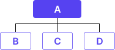

01
흐름을 먼저 설계하다
콘텐츠가 자연스럽게 이어지도록
섹션의 연결 순서와 전환 지점을 정리한다.
이 페이지는 개인 포트폴리오를 구성하며 어떤 기준으로 사고하고 판단했는지를 풀어낸 프로세스입니다. 작업의 순서를 나열하기보다, 결정을 내리는 흐름과 기준에 집중해 정리했습니다.
디자인은 감각보다 판단에서 시작되며, 모든 선택을 이끄는 기준을 먼저 설정합니다.
콘텐츠가 자연스럽게 이어지도록
섹션의 연결 순서와 전환 지점을 정리한다.

정보의 우선순위를 재배치해
한 번에 읽히는 구조를 만든다.
불필요한 요소를 덜어내고
메시지가 분산되지 않도록 정돈한다.
정해진 기준은 정보의 순서와 관계를 만들며, 자연스러운 구조로 이어집니다.
이 과정은 결과보다 기준과 흐름을 중시하는 저의 설계 방식을 보여줍니다.
디자인은 감각보다 판단에서 시작되며, 모든 선택을 이끄는 기준을 먼저 설정합니다.